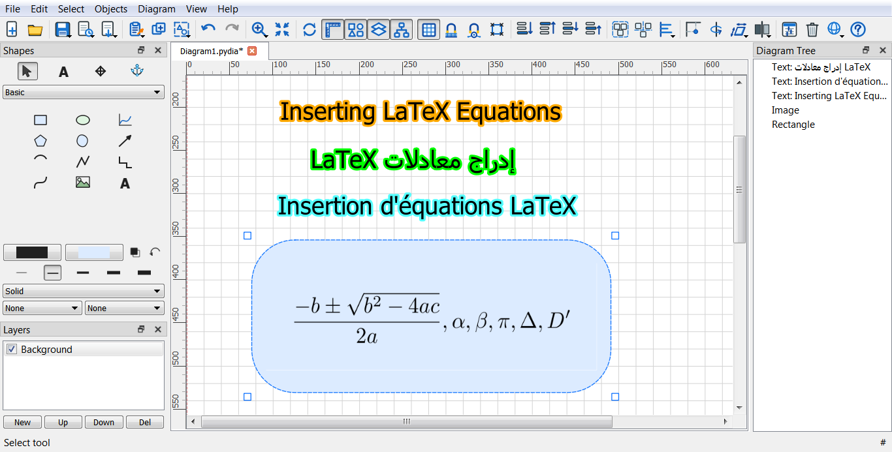

An Image shape's Properties dialog has a Create from LaTeX... button next to the usual Browse... file picker (see Shape properties). It opens a small equation editor that renders a LaTeX equation to an image and inserts it exactly as if you had browsed to a picture file.
\usepackage{amsthm}, for any packages the content
below needs.\frac{-b \pm \sqrt{b^2-4ac}}{2a}, or a complete
block of text and math such as a theorem
(\begin{theorem}...\end{theorem}) using the preamble
above.For this feature to work you must install either MiKTeX
(https://miktex.org) or TeX Live
(https://www.tug.org/texlive/).
Rendering compiles the equation with pdflatex and
rasterizes it with pdftocairo (part of Poppler), and both
programs must be found on the system's PATH; if
pdftocairo is not included with your LaTeX distribution,
install Poppler as well.
Rendered images are cached: re-rendering the exact same equation
with the same settings reuses the cached image instantly rather than
invoking pdflatex again. Reopening
Create from LaTeX... on an Image shape that already holds a
rendered equation prefills the editor with the equation and settings
that produced it, ready to tweak further.